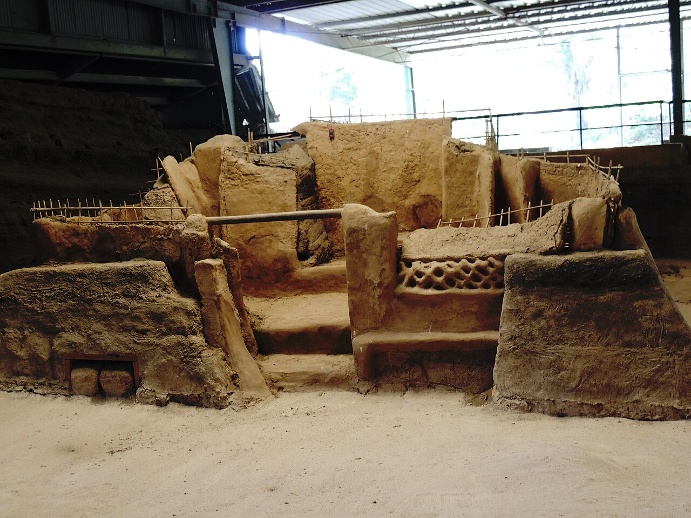
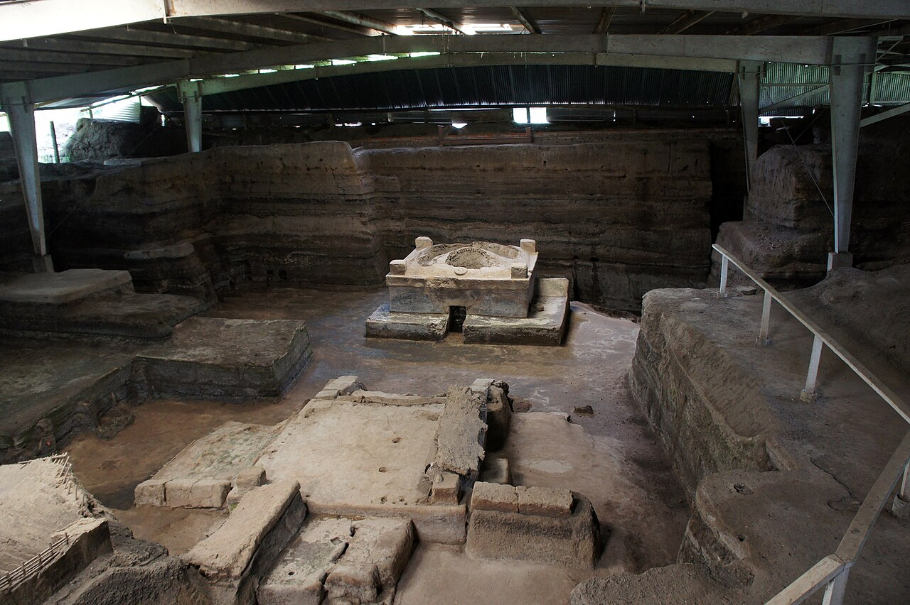
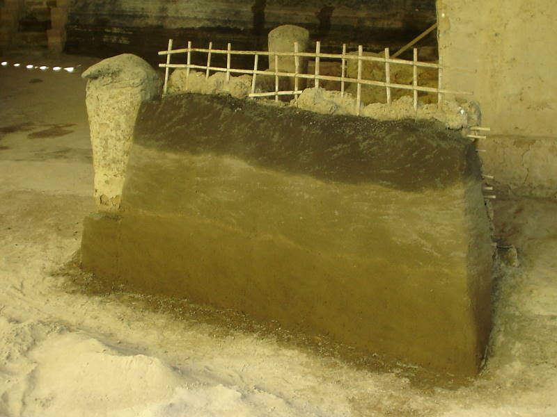
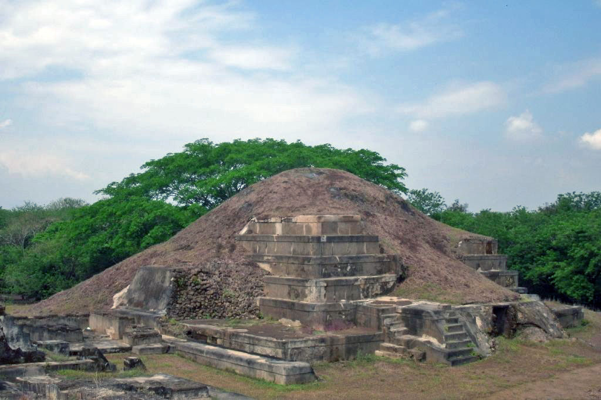
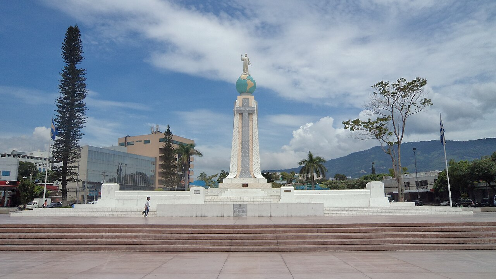

Arqueología · Maya
Pirámide de San Andrés
Centro ceremonial maya del período Clásico Tardío, en el valle de Zapotitán. Exploralo en 3D y manipulalo con gestos de tu mano.
Sitios Arqueológicos y Culturales de El Salvador

Una plataforma de realidad aumentada que transforma la forma en que turistas nacionales e internacionales descubren la riqueza cultural de El Salvador: experiencias inmersivas que conectan historia, patrimonio y tecnología en un solo recorrido.
Experiencias inmersivas en los sitios más importantes del patrimonio salvadoreño
Explora los tesoros del patrimonio salvadoreño a través de experiencias inmersivas en realidad aumentada. Historia, arqueología y cultura cobrando vida frente a tus ojos.

La "Pompeya de América": una aldea maya sepultada por la ceniza del volcán Loma Caldera hacia el año 600 d.C. La erupción preservó intactas sus casas de adobe, sus utensilios y hasta los alimentos.

El temazcal, baño de vapor ceremonial con su cúpula de barro intacta. Una estructura única en Mesoamérica que revela las prácticas de higiene y ritual de la vida cotidiana maya.

Muros de bahareque y adobe que sobrevivieron más de 1,400 años bajo la ceniza. Cada estructura muestra cómo vivía, cocinaba y trabajaba una comunidad campesina maya, no solo sus templos.

La Pirámide de San Andrés, corazón ceremonial del valle de Zapotitán. Invocala en realidad aumentada y recorré la acrópolis desde donde los gobernantes mayas dirigían toda la región.

El Salvador del Mundo, símbolo de la identidad salvadoreña en plena capital. Traelo a tu espacio con realidad aumentada y descubrí la historia del monumento más querido del país.
La trompeta de barro, instrumento ceremonial prehispánico hallado en sitios como Tazumal y Quelepa. Este render de nuestro modelo 3D es la misma pieza que podés invocar con un gesto.
Elige una invocación para comenzar
Arqueología · Maya
Centro ceremonial maya del período Clásico Tardío, en el valle de Zapotitán. Exploralo en 3D y manipulalo con gestos de tu mano.
Arma · Guerra
Garrote-espada mesoamericano de madera con filos de obsidiana. Arma de los guerreros pipiles del señorío de Cuzcatlán. Exploralo en 3D con gestos.
Monumento · Nacional
La figura de Cristo sobre el globo terráqueo: el ícono nacional de El Salvador, en el corazón de San Salvador. Exploralo en 3D con gestos.
Instrumento · Ritual
Instrumento de viento de cerámica de las culturas precolombinas. Su sonido grave acompañaba las ceremonias. Exploralo en 3D con gestos.
Recorre sitios arqueológicos, monumentos nacionales y piezas históricas con tecnología de realidad aumentada. Una forma nueva y emocionante de conectar con nuestra rica cultura.
Activá la experiencia y descubrí sobre este lugar